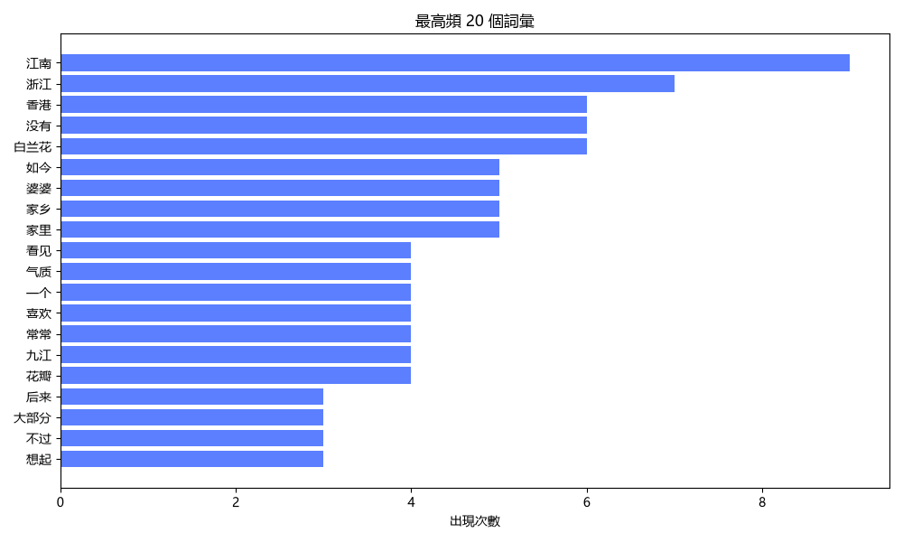
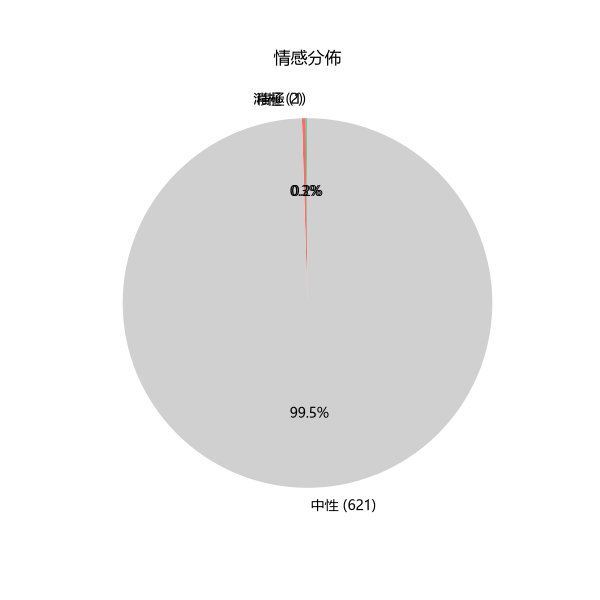

本文是一篇抒情散文，作者以「雨」為貫穿全文的意象，串聯了三座城市的記憶——江西九江（潯陽）、浙江與香港。從家鄉的「薄雨」到浙江的「多情春雨」，再到香港的「驟雨」，雨的質地隨著空間轉換而變化，也映照出作者離鄉後的心境遷徙。文中反覆出現的「白蘭花」與「白玉蘭」，則成為連結故鄉與童年的味覺與嗅覺符號。結尾引用張棗的詩句「江南一棵樹，我眼前的景色，便開始結果」，將個人思鄉提升為普遍的人類處境——「四方人間，沒有人能走出故鄉」。

| 排名 | 詞彙 | 出現次數 |
|---|---|---|
| 1 | 江南 | 9 |
| 2 | 浙江 | 7 |
| 3 | 香港 | 6 |
| 4 | 没有 | 6 |
| 5 | 白兰花 | 6 |
| 6 | 如今 | 5 |
| 7 | 婆婆 | 5 |
| 8 | 家乡 | 5 |
| 9 | 家里 | 5 |
| 10 | 看见 | 4 |
| 11 | 气质 | 4 |
| 12 | 一个 | 4 |
| 13 | 喜欢 | 4 |
| 14 | 常常 | 4 |
| 15 | 九江 | 4 |
| 16 | 花瓣 | 4 |
| 17 | 后来 | 3 |
| 18 | 大部分 | 3 |
| 19 | 不过 | 3 |
| 20 | 想起 | 3 |
詞頻分析：排名前五的詞依序為「江南」「浙江」「香港」「沒有」「白蘭花」。前三個地名的高頻出現，證實了「空間遷徙」是本文的核心結構——作者的思緒始終在三座城市之間游移。「白蘭花」與「白玉蘭」雖未佔據榜首，但做為反覆出現的植物意象，承載了故鄉的嗅覺記憶，是本文最重要的象徵符號。
作者筆下的雨並非同一種：九江的雨「很薄」，帶著白蘭花香，是記憶中柔軟的底色；浙江的雨「最多情」，「斷斷續續地下一個月」，是青春時期的朦朧曖昧；香港的雨「很凶，又纏綿」，是異地生存的壓迫感。同樣是雨，三種質感對應三個人生階段，也暗示了作者與故土之間由近及遠的距離。
作者自陳「白蘭花其實不是蘭花，屬於木蘭」，這種知識性的補充反而強化了情感真實——記得故鄉的花，是因為它不僅僅是花，而是「雨下著，簾外還能透進清光」的整個童年場景。母親在家中水養玉蘭花的細節，則將植物意象轉化為「母親也在懷念故鄉」的雙重思鄉。
引詩做結，使個人情懷獲得文學傳統的背書。「江南」在此不僅是地理空間，更是一個文化記憶的母題——作者看香港的雨，看到的其實是整個江南的雨。

情感解讀：本文的情感基調是「溫柔的惆悵」而非激烈的悲傷。從詞典分析來看，全文以中性敘事為主，積極詞與消極詞都不多——這正是散文的特質：情感藏在意象的經營中，而非直接宣洩。作者寫香港「叫人喘不過氣」，但筆鋒隨即轉向雨與花，苦而不怨，愁而不傷。
這篇散文的力量在於「輕」——它不吶喊思鄉，只是寫雨、寫花、寫窗景，讀者卻在不知不覺中走過了作者的三座城市。從潯陽江頭到浙江春雨，再到香港驟雨，雨是時間的濾鏡，白蘭花是記憶的香氣。結尾「沒有人能走出故鄉」一句，將私人的漂泊體驗錨定在人類共同的命題上，餘韻悠長。